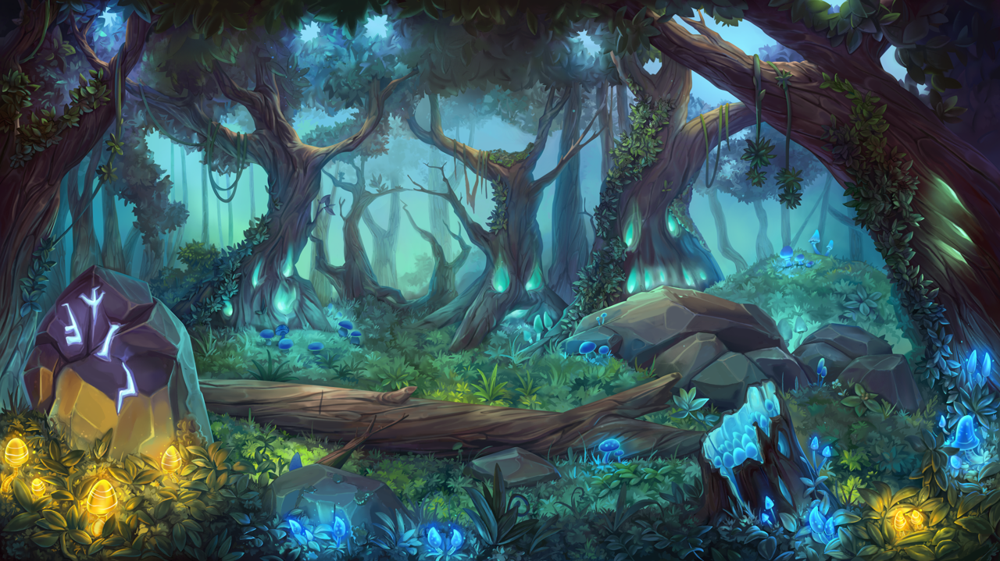

She started by collecting wood and then putting them together to form a tent and with strands of grass she tied them up together. After she got more wood and rocks to make a fire. At night she heared a noise, she got scared but she faces her fears and got a stick and went outside. In the bushed she saw movement, when she went closer and the creature jumped out! The creature said:"This island is not safe! Go away when you still can!" She wispered loudly. Eva was confised and said back:"Wait, don't go away!" The creature stoped and said:"The hydra is wating for me." Eva didn't care so she followd her without the creatue knowing. They kept walking and walking untill they stopped. The creature said to Eva:"My name is Waneta. I've been trapped in this island since I was born and every time I try to escape, I get punished." Eva felt bad but she has to go away from this island. Should she help Waneta or leave without her: Help Waneta or Leave without Wantena
